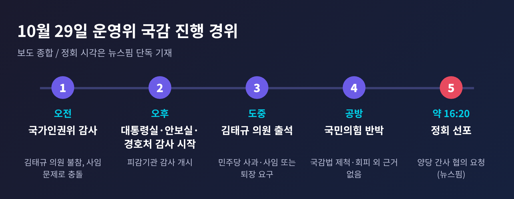
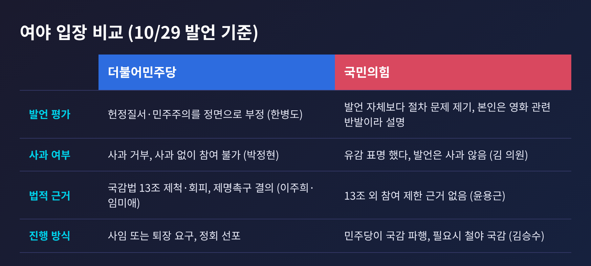
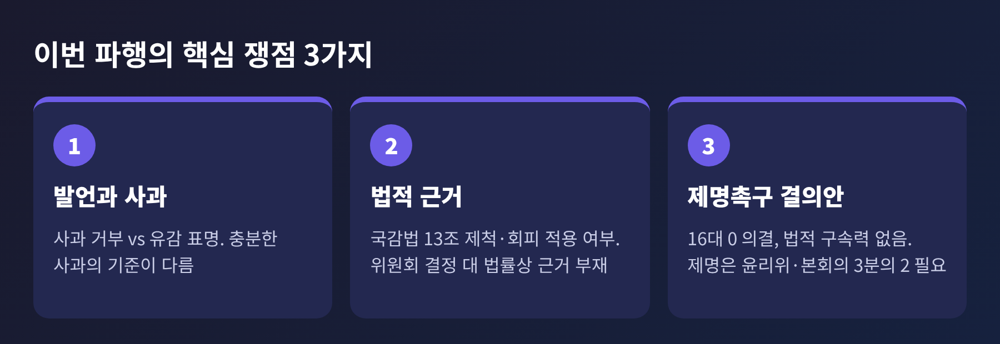
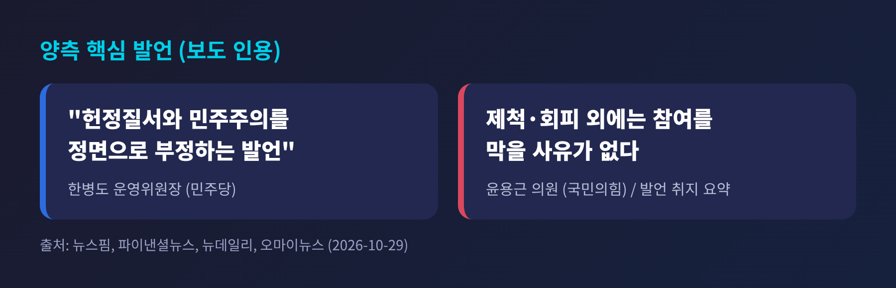
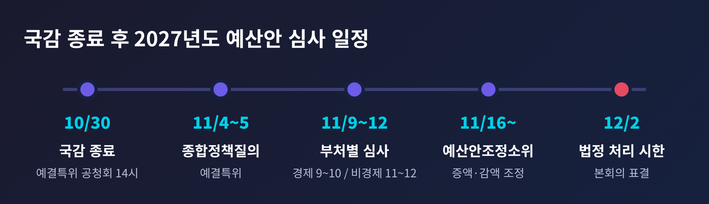

세 줄 요약
이번 글에서는 운영위 대통령실 국감이 왜 멈췄는지 정리해 보겠습니다. 누가 무엇을 주장했는지, 쟁점이 무엇인지, 이후 국감과 예산 일정에 어떤 영향이 있을지 차례로 살펴봅니다. 여야 양측의 입장을 가능한 한 같은 비중으로 옮기겠습니다.
29일 국회 운영위원회는 오전에 국가인권위원회를, 오후에 대통령비서실·국가안보실·대통령경호처를 감사하는 일정이었습니다. 쟁점이 된 인물은 국민의힘 김태규 의원입니다.
천지일보에 따르면 김 의원은 오전에는 출석하지 않았고, 오후 감사 도중 회의장에 나왔습니다. 그러자 민주당 운영위원들이 의사진행발언으로 사과와 운영위원 사임을 요구했습니다.
천준호 민주당 간사는 사과에 응하지 않으면 위원장이 퇴장 조치를 해 달라고 요청했습니다. 전용기 의원이 정회를 요청했고, 한병도 운영위원장이 양당 간사에게 협의를 당부한 뒤 정회를 선포했습니다. 뉴스핌은 이를 "약 2시간 만인 오후 4시 20분쯤"으로 전했습니다. 정회 시각을 적은 곳은 이 매체뿐이어서, 시각은 참고 정도로 보시기 바랍니다.

정회가 끝이 아니었습니다. 천지일보와 오마이뉴스는 정회 뒤에도 여야 의원 간 설전이 이어졌다고 전했습니다.
대통령실 국감은 정부 국정 운영을 국회가 직접 점검하는 자리입니다. 운영위는 대통령비서실 등을 피감기관으로 삼는 상임위여서, 이날 감사가 멈추면 점검 자체가 미뤄집니다.
여기에 한 가지가 더 얹혀 있습니다. 이번 충돌은 피감기관을 향한 질의가 아니라, 감사를 하는 의원의 자격 문제로 번졌습니다. 감사가 본론에 들어가기 전에 절차 다툼에 묶인 셈입니다.
또 하나는 시기입니다. 국정감사는 30일에 마무리되고, 곧바로 내년도 예산안 심사가 이어집니다. 남은 시간이 길지 않은 상황에서 감사가 중단되면 여야 모두에게 부담입니다.
발단은 9월 30일 JTBC 유튜브 방송입니다. 더팩트 보도에 따르면 김 의원은 윤석열 전 대통령의 12·3 비상계엄이 내란이냐는 질문에 "아니죠"라고 답했고, 전두환 전 대통령의 행위도 내란이 아니라는 취지로 말했습니다.
논란이 커지자 김 의원은 SNS에 유감을 표했습니다. 오마이뉴스가 인용한 표현은 "오해를 초래할 빌미를 제공한 부분"입니다. 역사적 사실은 국민적 논의에 맡긴다는 취지였다고 설명했습니다.
10월 2일 운영위는 김태규 제명 촉구 결의안을 의결했습니다. 무기명 투표에서 16대 0이었고, 국민의힘 위원들은 퇴장해 표결에 참여하지 않았습니다. 이 결의안은 법적 구속력이 없습니다. 실제 제명에는 윤리위원회 심사와 본회의 재적 3분의 2 찬성이 필요합니다.
그 시점에 국민의힘 김민전 의원은 민주당이 발언을 검열한다고 비판했고, 윤용근 의원은 운영위가 의원 제명을 논할 권한이 있느냐고 물었습니다. 갈등의 뿌리는 이때부터 있었던 셈입니다.
양측의 주장을 나란히 놓으면 이렇습니다.

민주당 측은 발언이 헌정질서를 부정한다고 보았습니다. 한병도 위원장은 "헌정질서와 민주주의를 정면으로 부정하는 발언"이라고 했습니다. 박정현 의원은 사과하지 않으면 함께 운영위를 할 수 없다고 했고, 서미화 의원은 사임과 퇴장을 촉구했습니다.
법적 근거로는 이주희 의원이 국정감사법 13조의 제척·회피를 들었습니다. 임미애 의원은 운영위가 제명 촉구 결의를 해 놓고 같은 의원이 감사에 참여하는 것은 결의를 무시하는 것이라고 주장했습니다.
국민의힘 측은 절차와 법을 짚었습니다. 윤용근 의원은 제척·회피 외에는 의원의 국감 참여를 막을 사유가 없다고 했고, 민주당에 근거를 제시하라고 요구했습니다. 김승수 간사는 민주당이 국감을 파행시키고 있다고 반발하며, 시간을 끌면 차수를 바꿔서라도 밤샘 국감으로 맞서겠다고 밝혔습니다.
김태규 의원 본인은 오마이뉴스·천지일보 보도에서 입장이 바뀔 이유가 없다고 했습니다. 자신은 피감기관이 아닌 감사위원인데 감사위원의 발언 때문에 피감기관 감사가 멈춘다고 했고, 문제의 발언은 영화를 둘러싼 민주당 측 발언에 대한 반발이었다고 설명했습니다. 동료 의원들에게 불편을 끼친 데는 송구하다고 했으나, 발언 자체를 사과하지는 않았습니다.

첫째, 발언과 사과입니다. 민주당은 사과 거부를 문제 삼고, 김 의원은 유감 표명으로 입장을 밝혔다는 쪽입니다. 같은 사안을 두고 "충분한 사과인가"의 기준이 서로 다릅니다.
둘째, 법적 근거입니다. 국정감사법 13조는 제척·회피를 규정합니다. 민주당은 이 조항과 위원회의 결정이 근거가 된다고 하고, 국민의힘은 이 조항 외에 참여를 막을 사유가 없다고 합니다. 천지일보는 이 대립을 "위원회 결정 대 법률상 근거 부재"로 정리했습니다. 이 조항이 이번 사안에 적용되는지는 보도만으로 판단하기 어렵습니다.
셋째, 제명 촉구 결의안의 효력입니다. 구속력이 없는 결의라는 점은 분명합니다. 다만 민주당은 위원회의 뜻을 존중하라는 의미로 읽고, 국민의힘은 의결 당시 발언을 검열하는 것이라고 비판했습니다.

한편 국민의힘은 이번 국감을 두고 '청와대 방탄 국감' 논란도 제기했다고 오마이뉴스는 전했습니다.
대통령실 국감은 파행 전부터 순탄치 않았습니다. 서울신문에 따르면 운영위는 21일 일반증인 없이 기관증인만 부르는 안건을 찬성 15명, 반대 5명으로 가결했습니다.
국민의힘이 요구한 강훈식 전 대통령비서실장, 김용범 전 정책실장, 김현지 제1부속실장의 증인 채택은 민주당 반대로 무산됐습니다.
민주당 한병도 위원장은 대통령비서실이 2024년 김건희 씨 사례를 제외하면 기관증인 외 증인을 채택한 사례가 없다고 설명했습니다. 국민의힘은 청와대가 자료 요구에 한 건도 응하지 않는다고 비판했습니다. 서로 다른 논리가 부딪힌 채 29일을 맞은 것입니다.
같은 날 정보위의 국정원 국감도 있었습니다. 국민의힘 유영하 간사는 북미가 대화 조건의 입장차로 접점에 이르지 못했지만 APEC 전후가 주목된다고 전했는데, 이 부분은 별도 글에서 다루겠습니다.

확인된 일정부터 보겠습니다. 30일에는 국회사무처와 국회도서관 등에 대한 감사가 예정돼 있고, 국정감사 기간이 끝납니다. 같은 날 오후 2시 예결특위가 내년도 예산안 공청회를 엽니다.
이후 여야가 10월 23일 합의한 일정은 이렇습니다. 11월 4~5일 종합정책질의, 9~10일 경제부처, 11~12일 비경제부처 심사입니다. 16일부터는 예산안조정소위가 증액과 감액을 다룹니다. 법정 처리 시한은 12월 2일입니다.
운영위 감사는 어떻게 이어질까요. 정회 이후 재개 시점과 양당 간사 협의 결과는 보도에서 확인되지 않습니다. 따라서 아래는 확정이 아니라 가능성입니다.
예산 국면에서도 미래대응기금 신설과 지방교부세 감소에 따른 지방재정 부담이 쟁점으로 꼽힙니다(경기신문). 감사 파행의 감정이 예산 협상에 번질지는 지켜볼 일입니다.
정리하면 이렇습니다.
이번 사안은 한 의원의 발언에서 시작해 국감 참여의 자격과 절차를 묻는 다툼이 되었습니다. 민주당은 헌정질서의 문제로, 국민의힘은 법과 절차의 문제로 각각 규정합니다.
두 시각 모두 나름의 근거를 내세우고 있습니다. 어느 쪽이 옳은지를 가르는 일은 이 글의 몫이 아닙니다.
다만 분명한 것이 하나 있습니다. 남은 것은 국정 감사의 시간이고, 그 시간은 이미 줄고 있습니다. 감사가 이어질지는 이제 양당 간사의 협의에 달려 있습니다.
출처: 뉴스핌·파이낸셜뉴스·뉴데일리·오마이뉴스·천지일보·국제뉴스(이상 2026-10-29), 서울신문(10-21), 더팩트(10-02), 파이낸셜뉴스(10-23), 경기신문(10-25)